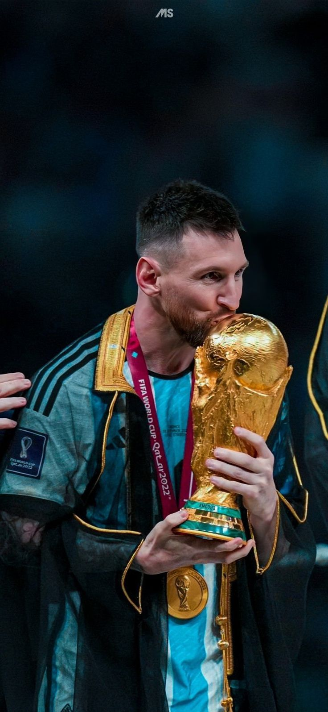

MESSI
El Goat
Llega como campeón vigente con Argentina y todavía rindiendo bien pese a su edad (38 años). Sigue siendo clave en la selección y en las eliminatorias fue importante en goles y asistencias. Eso sí, hay incertidumbre porque no ha confirmado al 100% si jugará, y claramente ya no está en su prime físico, pero su calidad sigue intacta.